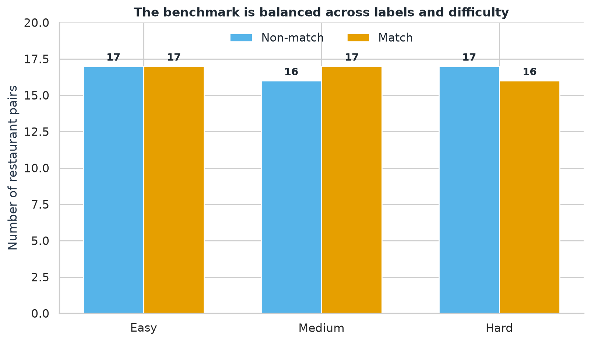
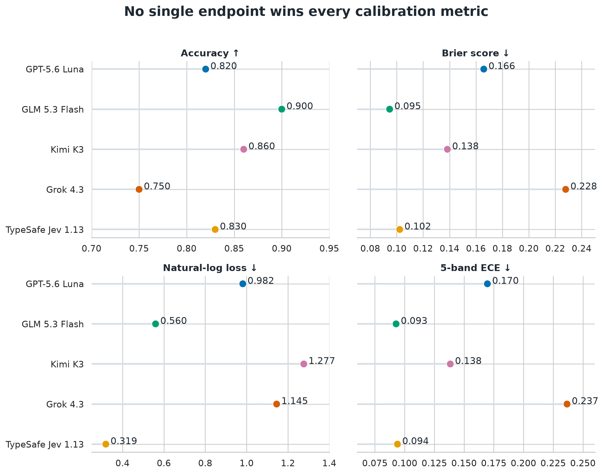
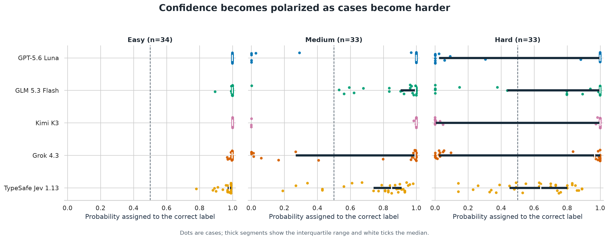
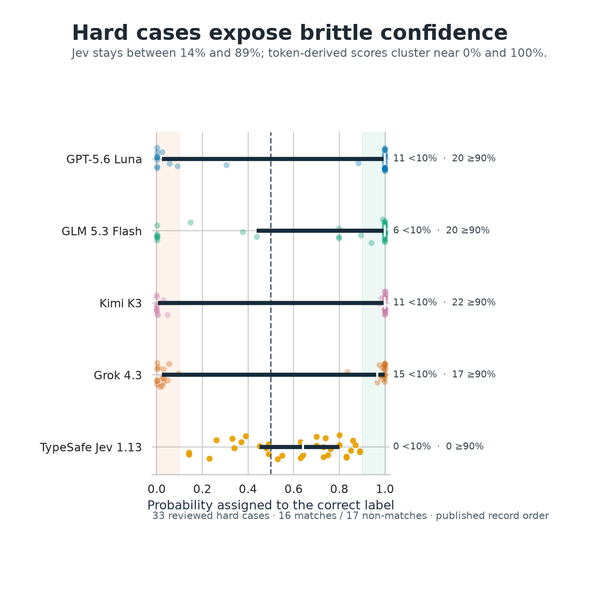
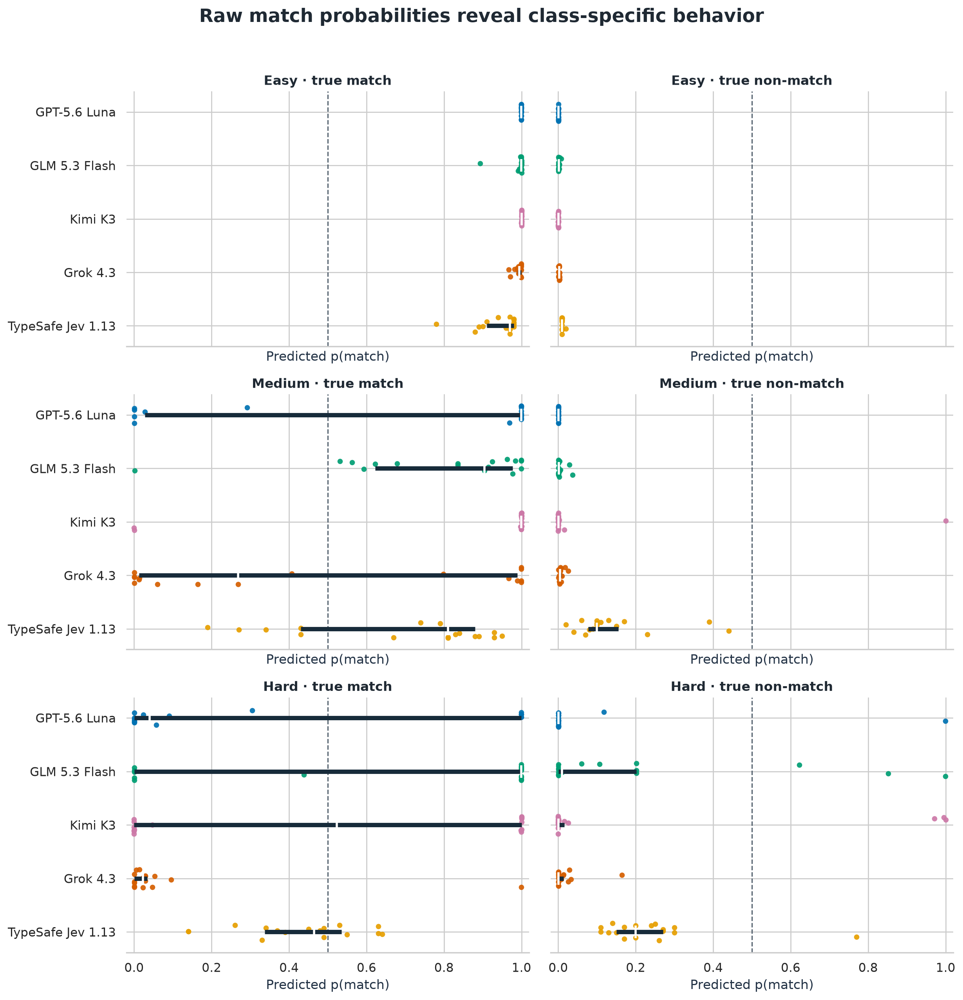
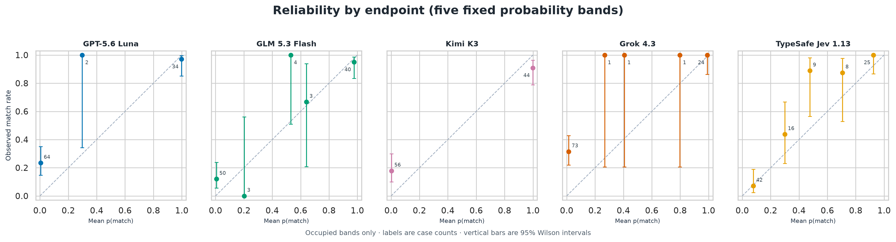

| label | Non-match | Match |
|---|---|---|
| Difficulty | ||
| easy | 17 | 17 |
| medium | 16 | 17 |
| hard | 17 | 16 |
| Total | 50 | 50 |
Benchmark design
The task is deterministic binary entity resolution: do two records describe the same physical restaurant outlet? The reviewed benchmark contains 100 pairs, balanced 50/50 between matches and non-matches. Each pair is also assigned a reviewed difficulty level.

The constructed 50/50 prevalence makes model comparisons straightforward, but it is not an estimate of how often records match in production.
Study assumptions
These choices materially affect how the comparison should be interpreted:
- Probability interface: Jev returns a native binary probability. Luna, GLM, Kimi, and Grok are evaluated through answer-token log probabilities.
- Single-label fallback: When Luna, GLM, or Grok returned only one of the two requested answer labels, the predeclared rule assigned
0.999to the returned label and0.001to the missing alternative. Kimi’s extreme probabilities came from returned log probabilities, not this fallback. - Reasoning setting: Luna and Grok used
none; GLM and Kimi usedlowbecause those routes generated or required reasoning before the visible answer. - Comparison unit: The results compare the exact endpoint configurations and probability interfaces used here—not abstract model families under identical settings.
The finding in one sentence
TypeSafe Jev produced the least brittle confidence on difficult cases and the best overall log loss, while GLM 5.3 Flash still led overall accuracy, Brier score, and expected calibration error.
The key takeaway is that a model can make more correct decisions while assigning damaging levels of confidence to the mistakes it does make. Conversely, a cautious model can limit the cost of its errors without winning every aggregate metric.
Does Jev 1.13 represent a new class of models that can curb the tendency of LLMs to be overconfident? This limited experiment suggests that possibility, but broader replication is needed.
Overall results
Accuracy measures decisions. Brier score and natural-log loss measure probabilistic quality. ECE summarizes the gap between predicted probabilities and observed frequencies using five fixed probability bands; identical probabilities always remain together. Higher accuracy is better; lower Brier, log loss, and ECE are better.
| Model | N | Accuracy | Brier | Log loss | ECE |
|---|---|---|---|---|---|
| GPT-5.6 Luna | 100 | 0.820 | 0.166 | 0.982 | 0.170 |
| GLM 5.3 Flash | 100 | 0.900 | 0.095 | 0.560 | 0.093 |
| Kimi K3 | 100 | 0.860 | 0.138 | 1.277 | 0.138 |
| Grok 4.3 | 100 | 0.750 | 0.228 | 1.145 | 0.237 |
| TypeSafe Jev 1.13 | 100 | 0.830 | 0.102 | 0.319 | 0.094 |

Jev’s 0.319 log loss is substantially lower than GLM’s 0.560, but GLM has higher accuracy (0.900 versus 0.830), a lower Brier score (0.095 versus 0.102), and slightly lower ECE (0.093 versus 0.094). There is no metric-independent winner.
Confidence changes with difficulty
For the next view, each probability is converted to the probability assigned to the correct label: p(match) for a true match and 1 − p(match) for a true non-match. This makes confident correct and confident incorrect predictions visible on a shared axis.

All five endpoints are effectively certain and correct on the easy stratum. The separation begins on medium cases and becomes stark on hard cases. Kimi, Luna, and Grok are especially polarized: their medians can remain high even while a sizable minority of cases receive almost zero probability on the correct answer. Note that the median for Jev decreases as the difficulty level increases.
Hard cases expose brittle confidence
The hard stratum contains 33 pairs: 16 matches and 17 non-matches.

| Model | <10% | 10–25% | 25–50% | 50–75% | 75–90% | ≥90% |
|---|---|---|---|---|---|---|
| GPT-5.6 Luna | 11 | 0 | 1 | 0 | 1 | 20 |
| GLM 5.3 Flash | 6 | 1 | 2 | 0 | 4 | 20 |
| Kimi K3 | 11 | 0 | 0 | 0 | 0 | 22 |
| Grok 4.3 | 15 | 0 | 0 | 0 | 1 | 17 |
| TypeSafe Jev 1.13 | 0 | 3 | 9 | 10 | 11 | 0 |
Jev assigns the correct label between 14% and 89% probability on every hard case. It has no predictions below 10% or at least 90%. By contrast, Kimi has 22 hard cases at or above 90% and 11 below 10%; Grok has 17 and 15 respectively. This endpoint mass explains why a few confidently wrong predictions can dominate natural-log loss.
The difficulty-level metrics show the trade-off directly:
| Difficulty | Model | N | Accuracy | Brier | Log loss | ECE |
|---|---|---|---|---|---|---|
| easy | GPT-5.6 Luna | 34 | 1.000 | 0.000 | 0.001 | 0.001 |
| easy | GLM 5.3 Flash | 34 | 1.000 | 0.000 | 0.005 | 0.005 |
| easy | Kimi K3 | 34 | 1.000 | 0.000 | 0.000 | 0.000 |
| easy | Grok 4.3 | 34 | 1.000 | 0.000 | 0.005 | 0.005 |
| easy | TypeSafe Jev 1.13 | 34 | 1.000 | 0.003 | 0.036 | 0.034 |
| medium | GPT-5.6 Luna | 33 | 0.818 | 0.165 | 0.985 | 0.173 |
| medium | GLM 5.3 Flash | 33 | 0.970 | 0.058 | 0.296 | 0.109 |
| medium | Kimi K3 | 33 | 0.909 | 0.091 | 0.864 | 0.090 |
| medium | Grok 4.3 | 33 | 0.697 | 0.256 | 1.318 | 0.279 |
| medium | TypeSafe Jev 1.13 | 33 | 0.848 | 0.097 | 0.319 | 0.115 |
| hard | GPT-5.6 Luna | 33 | 0.636 | 0.338 | 1.988 | 0.345 |
| hard | GLM 5.3 Flash | 33 | 0.727 | 0.229 | 1.395 | 0.256 |
| hard | Kimi K3 | 33 | 0.667 | 0.329 | 3.004 | 0.329 |
| hard | Grok 4.3 | 33 | 0.545 | 0.435 | 2.147 | 0.435 |
| hard | TypeSafe Jev 1.13 | 33 | 0.636 | 0.210 | 0.610 | 0.155 |
On hard cases, Jev improves on GLM’s Brier score (0.210 versus 0.229) and log loss (0.610 versus 1.395) and has lower five-band ECE (0.155 versus 0.256). GLM remains more accurate (72.7% versus 63.6%), so Jev’s stronger probabilistic scores do not translate into better hard-case classification accuracy.
Raw match probabilities and class behavior
Correct-label probability is communicatively useful, but it can hide class-specific tendencies. The raw p(match) distributions below separate true matches from true non-matches.

For a true match, values should be high; for a true non-match, values should be low. Luna and Grok’s hard-case failures are concentrated among true matches, revealing a strong tendency toward the non-match answer rather than symmetric uncertainty.
Reliability
Reliability plots compare mean predicted match probability with the observed match rate. Perfect calibration follows the diagonal. The plot below uses five fixed probability bands, keeps ties together, omits empty bands, does not connect the markers, and shows both case counts and 95% binomial intervals. These intervals describe uncertainty within the reviewed benchmark under a binomial model; they are not guarantees about calibration in a different production population.

Visually Jev 1.13 appears most well calibrated of the available models.
Scope of the conclusion
This is a fixed, reviewed suite of 100 restaurant pairs with balanced prevalence. The results describe these endpoint configurations on this benchmark. They should motivate broader replication, not a universal claim about production entity resolution.
Reproduction
The post source and accompanying Python analysis module recompute every table and figure from the anonymous prediction-level CSV included with this post. The public data contains sequential case numbers, labels, difficulty, record order, model name, probabilities, correctness, and extraction method. It excludes restaurant records, pair identifiers, source provenance, provider responses, local paths, and evidence hashes.
The complete benchmark implementation, analysis workflow, and reproducibility materials are available in the evaluating-calibration-llm repository.